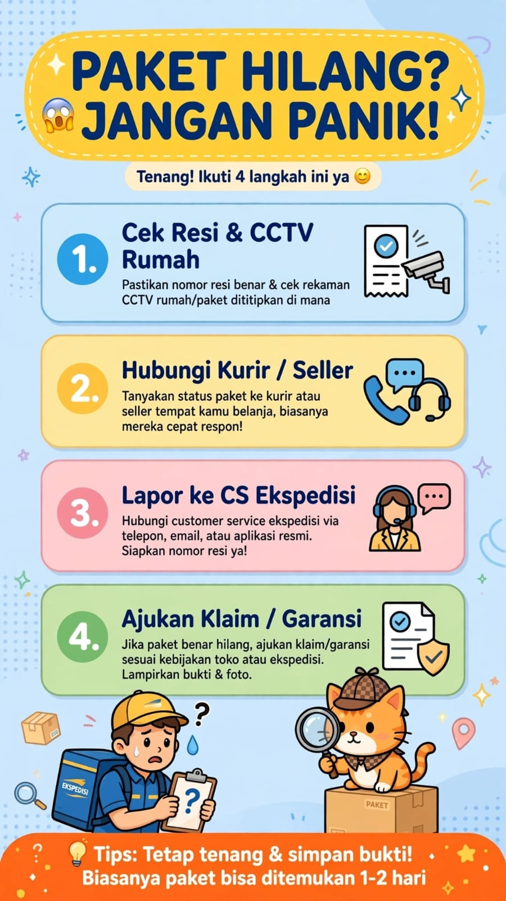

Paket Hilang Harus Ngapain? Ini Langkah yang Perlu Dilakukan

Sudah menunggu kiriman berhari-hari, tetapi paket belum sampai? Nomor resi tidak menunjukkan perkembangan, atau statusnya bahkan tertulis sudah terkirim padahal barang belum diterima? Situasi seperti ini tentu membuat pengirim maupun penerima khawatir.
Jika mengalami hal tersebut, pertanyaan yang sering muncul adalah paket hilang harus ngapain? Jangan buru-buru menyimpulkan paket benar-benar hilang. Periksa informasi pengiriman terlebih dahulu, lalu ajukan pemeriksaan melalui jalur resmi jika paket belum ditemukan.
📦 Ada Kendala dengan Pengiriman Paket?
Siapkan nomor resi dan informasi status terakhir sebelum bertanya mengenai layanan pengiriman. Untuk pemeriksaan kiriman tertentu, hubungi kanal layanan resmi perusahaan ekspedisi yang menangani paket tersebut.
💬 Chat WhatsApp 0851-8309-04861. Pastikan Dulu Apakah Paket Benar-Benar Hilang
Paket yang belum diterima tidak selalu berarti hilang. Bisa jadi pengiriman masih berlangsung, informasi pelacakan belum diperbarui, atau terdapat kendala pada proses pengantaran. Karena itu, langkah pertama adalah memeriksa status terakhir paket.
A. Periksa Nomor Resi
Masukkan nomor resi pada situs atau aplikasi resmi perusahaan ekspedisi yang menangani kiriman. Pastikan nomor yang dimasukkan benar dan sesuai dengan bukti pengiriman.
B. Perhatikan Status Terakhir
Catat status terakhir beserta tanggal pembaruannya. Informasi tersebut dapat membantu petugas memahami apakah paket masih diproses, sedang dalam perjalanan, mengalami kendala, atau tercatat telah sampai ke penerima.
C. Tanyakan kepada Pengirim atau Penerima
Jika Anda adalah penerima, hubungi pengirim untuk memastikan alamat tujuan dan nomor kontak yang dicantumkan sudah benar. Jika status menyatakan paket terkirim, periksa juga apakah paket diterima oleh anggota keluarga, petugas keamanan, resepsionis, atau orang lain yang biasa menerima kiriman di alamat tersebut.
📍 Lion Parcel Bandung POS101 Nanjungmekar
Untuk informasi umum mengenai layanan pengiriman Lion Parcel, Anda dapat menghubungi Lion Parcel Bandung POS101 di Nanjungmekar, Rancaekek, Kabupaten Bandung.
Alamat: Jl. Raya Barat Cicalengka RT 1 RW 1, Nanjung Mekar, Rancaekek, Kabupaten Bandung, Jawa Barat.
2. Segera Hubungi Pihak Ekspedisi
Jika paket belum ditemukan setelah pemeriksaan awal, hubungi layanan pelanggan resmi perusahaan ekspedisi. Jangan hanya mengandalkan perkiraan atau menunggu tanpa batas waktu, terutama jika estimasi pengiriman sudah terlewati.
Saat menghubungi petugas, jelaskan masalah dengan singkat dan terstruktur. Sampaikan nomor resi, tanggal pengiriman, tujuan, status terakhir, serta kapan terakhir kali informasi pelacakan berubah.
Mintalah pemeriksaan atau penelusuran kiriman dan catat nomor laporan jika diberikan. Tanyakan pula bagaimana cara memantau tindak lanjutnya dan apakah ada dokumen tambahan yang diperlukan.
3. Siapkan Bukti Sebelum Mengajukan Komplain
Bukti yang lengkap dapat membantu proses pemeriksaan. Simpan dokumen yang berkaitan dengan pengiriman dan jangan menghapus percakapan atau notifikasi penting.
- Nomor resi: identitas pelacakan kiriman.
- Bukti pengiriman: struk, kuitansi, atau bukti serah terima jika tersedia.
- Bukti pembelian: invoice atau bukti transaksi apabila paket berasal dari belanja online.
- Tangkapan layar pelacakan: status terakhir beserta tanggalnya.
- Informasi barang: jenis barang dan nilai barang jika diminta dalam proses pemeriksaan.
- Riwayat komunikasi: catatan laporan dan jawaban dari pihak ekspedisi.
Jangan mengunggah nomor resi beserta alamat dan nomor telepon penerima secara terbuka di media sosial. Berikan informasi lengkap hanya melalui saluran resmi yang diperlukan untuk pemeriksaan.
4. Bagaimana Jika Status Paket Sudah Terkirim, tetapi Barang Belum Ada?
Status terkirim yang tidak sesuai dengan kondisi sebenarnya perlu segera ditindaklanjuti. Periksa kembali alamat tujuan dan tanyakan kepada orang-orang yang mungkin menerima paket atas nama Anda.
Jika barang tetap tidak ditemukan, laporkan perbedaan tersebut kepada layanan pelanggan ekspedisi. Sampaikan bahwa sistem menunjukkan status terkirim, tetapi Anda belum menerima barang. Minta informasi mengenai bukti serah terima atau hasil pemeriksaan sesuai prosedur yang berlaku.
Jika pembelian dilakukan melalui marketplace, laporkan juga masalah melalui fitur bantuan atau sengketa pesanan di platform tersebut. Perhatikan batas waktu pengajuan komplain dan jangan menekan tombol konfirmasi penerimaan apabila barang memang belum diterima.
5. Apakah Paket Hilang Bisa Mendapat Ganti Rugi?
Kemungkinan penggantian atau klaim bergantung pada hasil pemeriksaan, ketentuan layanan, bukti yang tersedia, jenis kiriman, dan ketentuan perlindungan atau asuransi yang berlaku. Tidak semua kasus otomatis mendapatkan ganti rugi dengan jumlah yang sama.
Jika paket diduga benar-benar hilang, tanyakan kepada perusahaan ekspedisi mengenai prosedur klaim, dokumen yang dibutuhkan, batas waktu pengajuan, serta cara perhitungan penggantian jika klaim disetujui.
Simpan bukti nilai barang dan transaksi jika relevan. Baca ketentuan layanan yang berlaku saat pengiriman dilakukan, karena persyaratan dan batas tanggung jawab dapat berbeda sesuai jenis layanan serta kondisi kiriman.
6. Siapa yang Harus Mengajukan Komplain, Pengirim atau Penerima?
Pengirim maupun penerima dapat mulai meminta informasi mengenai kendala paket. Namun, pihak yang dapat mengajukan penelusuran formal atau klaim dapat bergantung pada aturan perusahaan ekspedisi dan platform tempat transaksi dilakukan.
Untuk pembelian online, sebaiknya penerima segera memberi tahu penjual, sedangkan penjual dapat membantu menindaklanjuti melalui jalur yang tersedia. Untuk kiriman pribadi, pengirim perlu menyimpan bukti serah terima dan berkoordinasi dengan penerima.
Agar proses tidak berulang, sepakati siapa yang akan menjadi kontak utama dan simpan nomor laporan serta semua bukti komunikasi.
7. Contoh Pesan untuk Komplain Paket Hilang
Jika bingung menyusun pesan, Anda bisa menggunakan contoh berikut saat menghubungi layanan pelanggan resmi:
Contoh pesan:
Halo, saya ingin meminta bantuan pemeriksaan kiriman dengan nomor
resi [nomor resi]. Paket dikirim pada [tanggal pengiriman] dengan
tujuan [kota tujuan]. Status terakhir yang muncul adalah
[status terakhir], tetapi paket belum saya terima sampai saat ini.
Mohon bantuan untuk menelusuri kondisi kiriman dan memberi tahu
langkah selanjutnya. Terima kasih.
Isi bagian dalam tanda kurung sesuai kondisi sebenarnya. Hindari mengirim informasi pribadi yang tidak diperlukan dan gunakan kontak resmi perusahaan ekspedisi.
Perlu Informasi Seputar Layanan Pengiriman?
Lion Parcel Bandung POS101 dapat membantu menjawab pertanyaan umum seputar layanan pengiriman. Untuk paket yang sudah dalam perjalanan atau diduga hilang, pemeriksaan perlu dilakukan melalui kanal resmi yang menangani kiriman tersebut.
💬 Chat WhatsApp 0851-8309-0486Kesimpulan
Jika paket diduga hilang, jangan langsung menyimpulkan bahwa kiriman benar-benar hilang. Periksa nomor resi, cek alamat tujuan, dan tanyakan kepada orang yang mungkin menerima paket. Jika belum ditemukan, segera hubungi layanan pelanggan resmi untuk meminta penelusuran.
Simpan bukti pengiriman, tangkapan layar pelacakan, bukti transaksi, serta nomor laporan. Jika diperlukan, tanyakan prosedur klaim dan ketentuan ganti rugi yang berlaku. Semakin jelas informasi yang disampaikan, semakin mudah petugas memahami masalah yang perlu diperiksa.
Nama Agen: Lion Parcel Bandung POS101 Nanjungmekar Rancaekek
Jam Operasional: Senin–Minggu, 08.00–20.00 WIB
Alamat: Jl. Raya Barat Cicalengka RT 1 RW 1, Nanjung Mekar, Rancaekek, Kabupaten Bandung
WhatsApp: 0851-8309-0486